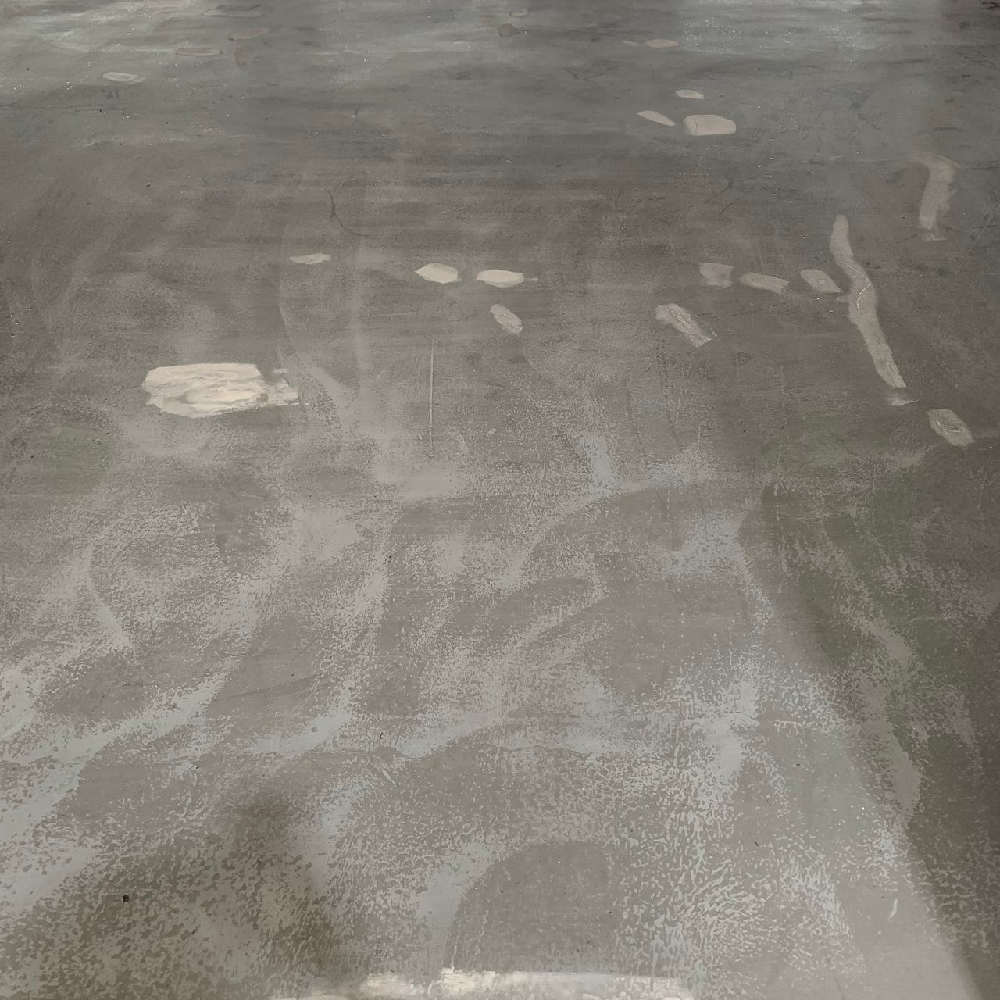

Impermeabilització de cobertes de nau
Una membrana de poliuretà líquid contínua, sense encavalcaments ni juntes, que s’adapta a cargols, canalons i trobades i s’aplica en fred. Treballem amb Mamper, poliuretà líquid 100 %.


La gotera no és on degota
L’aigua entra per un punt, corre per sota de la xapa o de l’aïllament i cau uns quants metres més enllà. Per això es revisa tota la coberta, començant per aquests cinc llocs:
Encavalcaments i cargols
La xapa es dilata i es contrau cada dia; les volanderes s’esquerden i els encavalcaments s’obren.
Canalons i embornals
Fulles, fang i rovell els obstrueixen, l’aigua vessa i entra per la trobada amb la façana.
Trobades
Ampits, murs, claraboies i canvis de pendent: allà on la coberta deixa de ser plana.
Juntes de dilatació
Necessiten un tractament que acompanyi el moviment; si no, s’obren.
Passos d’instal·lacions
Equips de climatització, conductes, suports de plaques solars: cada ancoratge és un forat.
Per què poliuretà líquid
En una coberta de nau, amb centenars de cargols i moltes trobades, les làmines que s’encavalquen multipliquen els punts febles. Una membrana líquida els cobreix tots d’una vegada.
- Contínua
- Forma una sola pell, sense encavalcaments ni costures per on pugui començar una filtració.
- S’adapta
- Embolcalla cargols, perfils, canalons i trobades, que és on fallen les cobertes.
- Elàstica
- Acompanya les dilatacions de la xapa amb la calor i el fred sense esquerdar-se.
- En fred
- S’aplica sense bufador ni flama. Amb la nau en marxa i material emmagatzemat a sota, això és important.
- Lleugera
- Gairebé no afegeix pes a la coberta, cosa que compta en les estructures lleugeres de nau.
El que passa abans de la membrana
La membrana és l’última part. Si a sota hi queda rovell, brutícia o un cargol fluix, fallarà per allà.

Revisió
Recorrem la coberta, localitzem les entrades d’aigua i comprovem l’estat del suport.
Neteja i reparació
Canalons i embornals nets, rovell tractat, cargols substituïts o segellats, fissures i encavalcaments reparats.
Imprimació i reforços
Imprimació segons el suport (xapa, formigó o làmina asfàltica antiga) i reforç amb malla als punts crítics.
Membrana i acabat
Poliuretà líquid en capes fins al gruix del sistema i, si cal, una capa de protecció contra el sol.
Sobre cobertes de nau
Es pot impermeabilitzar amb la nau funcionant?
Sí, en la majoria dels casos: la feina es fa des de dalt, en fred i sense flama, i a dins l’activitat continua. El que sí que cal preveure és l’accés a la coberta, la zona d’aplec i, si s’ha de substituir alguna placa, protegir el que hi ha a sota.
I si la coberta és de fibrociment?
Les plaques de fibrociment antigues poden contenir amiant. Qualsevol treball que les manipuli (tallar, foradar, netejar amb aigua a pressió, retirar) l’ha de fer una empresa inscrita al Registre d’empreses amb risc d’amiant (RERA) i amb un pla de treball aprovat. Ho valorem a la visita abans de proposar res.
Es pot aplicar damunt d’una làmina asfàltica vella?
Sovint sí, si la làmina està ben enganxada: es neteja, es reparen les butllofes i els encavalcaments oberts i es fa servir una imprimació compatible. Si està molt deteriorada o reté aigua a sota, val més retirar-la.
Es pot trepitjar la coberta després?
Per fer-hi manteniment, sí. Si la coberta ha de tenir trànsit habitual (equips de climatització que es revisen sovint, per exemple), es marquen camins de pas amb un acabat més resistent.
També feu terrasses i cobertes de comunitats?
Sí, amb el mateix sistema. Ho expliquem a terrasses i cobertes, dins de comunitats i façanes.
On degota?
Envia’ns fotos de la coberta i de les taques de dins, els metres aproximats, el tipus de coberta (xapa, panell, formigó, làmina) i, si ho saps, de quin any és la nau.